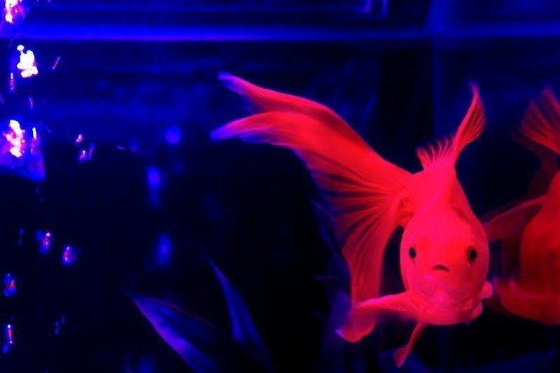

金魚は所詮無力である。
相手を喰らう力もないし、ましてや大海原で生きていくほどの生命力もない。なぜそんなに悲観しているのかと言われそうだが、それは嘘偽りのない事実なのだ。
そんな自分の弱さを痛感する事件に遭遇した。
ある日のこと。女は明け方頃、酒に酔って帰ってきた。
「勢いよくテキーラなんか飲むからだよ」
背中をさすりながら、見慣れない若い男が女を気遣っている。
間抜け面の飼い主を思い出した。同じ人間でも飼い主とは別の生き物かと思うくらい容姿端麗な男だ。
「おい、起きろ。誰だ、あいつは？」
メイはそんな質問に答えることもなく、実に健やかな顔で寝ている。まったく、こいつもあの女と似て朝が非常に遅い。
男はコップに水を注ぎ女に渡した。女はそれを飲み干し、大きなあくびをした。
「寝ようか」
男が言うと、女とともに同じベッドに入った。
女はまもなく夢の世界に行ってしまったが、男はそれを確認すると音を立てないよう水槽の方へとやってきた。
「やっとここまでこれたぜ。でも話が違うな。一匹だけと聞いていたが。まあいい。二匹とも連れていきゃいい話だ」
そう呟くと、なんと男は水槽に片方の手を突っ込み、私たちを連れ去ろうとするではないか！
「起きろ！ 不審者だ！」
そんな私の忠告もむなしく、寝ているメイは男の手に吸い込まれていく。致し方ない、今は私だけでも逃げ延びるしか……！ 急いで水草の陰に隠れた。
「無駄な抵抗はよすんだ」
男はもう一方の手を勢いよく突っ込み、両手で私の確保に乗り出した。水草がむしり取られ、私は必死に水中を舞うが、ついに二つの大きな手によって捕まってしまった。
その時、改めて自分の無力さを悟った。怪しい人間からは所詮逃げ惑うことしかできないのだと。
「手間取らせるなよ。金魚のくせに」
黒いビニール袋に入れられた私たちは、何も見ることができない。まさに暗闇の中。
「ん？ えっ！？ ここどこ？ 何も見えない！」
「やっと起きたか。メイよ、落ち着いて聞け。私たちは今さっき何者かに連れ去られた」
メイは何も言葉を返さない。ショックのあまり言葉を失っているのか。
「そんな予感はしてた」
メイが予期せぬ返事をしたが、声はやけに落ち着いている。
「どういうことだ？ 詳しく教えてくれ」
質問せざるを得なかった。早くこの拉致事件の全容を把握したい。私の頭の中にはそれしかなかった。
「実はあたし、巷では知る人ぞ知る高級金魚なの。そのことを頭に入れておいて」
メイはそう前置きすると、ことの経緯を話してくれた。
どうやら半年ほど前から、女が電話で誰かとメイのことを話しているのを何度も見たことがあったらしい。
電話の相手は女の店に来る金魚好きの色男で、その男の口説き文句によって女は次第に惹かれていったようだ。
「元々顔がよくて優しければ、すぐコロッていっちゃうから」
メイは呆れた声でそう女を評した。
女と違って勘の鋭いメイは、その男の目的を最初から疑っていた。男の正体は高級金魚を狙う金魚ハンターで、端から自分を狙って女に近づいているのではないか？ メイはそう考えていた。
「なるほど。ことの成り行きは分かった」
メイは何も言葉を返さない。暗闇の中で長い沈黙が続く。その重さに耐えきれず、思わずこう言っていた。
「お前は私が守るから心配するな」
メイはようやくゆっくりと口を開いた。
「強がらないでいいよ。もとはといえばあたしのせいだし。むしろあんたを巻き込んで申し訳ないと思ってる」
相変わらず年長者への敬意を感じない口振りだが、その言葉からメイの素直さを感じた。何だかんだ言っても、メイの心は純粋なのだ。そして、私はそうした心に滅法弱い。
「誰のせいであろうと、金魚に悪さするやつは許せない。それだけのことだ。好きにさせてくれ」
しばらくして私たちが入れられたビニール袋が開くと、そこは薄暗い部屋だった。
「連れてきたか？」
「もちろんでっせ、兄貴」
この金魚ハンターなる男、女の前では洒落た言葉を使っていたようだが、本当はコテコテの関西弁じゃないか。
そんなことを思ったのも束の間、私たちは高そうな金魚鉢へと移された。
「ようやった」
「でも兄貴、二匹いたんですよ」
「ん？」
すると、兄貴と呼ばれる坊主頭の中年男が金魚鉢に顔を近づけた。肌は黒く、目は血走っている。派手な赤いネクタイを締めており、威圧感が凄まじい。どんな修羅場をくぐり抜けたらそんな風貌になるのか。
「目当てはこいつだ」
そう言って、中年男はメイを指差した。
「承知しやした。違う方はどうしやすか？」
「下水道にでも捨てとけ」
「へい」
「おい待て！ 命を何だと思ってるんだ！」
思わず水中で叫んだ。でも声は届かない。金魚鉢から飛び跳ねれば……いや、そんなことをしてもやつらの反感を買うだけだ。
不運を恨みかけたその時、誰かが部屋に入ってきた。
「兄貴、例の件について資料できました」
「ご苦労。そこに置いといてくれ」
年を食った男だった。小太りで白髪。そいつはメイを見るなり、興奮した様子を見せた。
「これは珍しい！ 今回はどんな手口を？」
「半年かけて所有者の女をこいつに口説き落としてもらった。その女の隙を見て頂戴してきたという訳だ」
「時間をかけた甲斐がありましたな」
そんな話をしている。やはり生まれた姿で値打ちが決まるのか。大切なのは金魚も人間も心ではないのか。そんなことを考えていると、爺さんは私を見た。
「こっちは至って普通の金魚ですな」
「そいつは今から捨てるところだ」
「いやはや、それはいけませんぞ。金魚といえど命を粗末に扱ってはなりません。捨てるぐらいなら私が頂いてもよろしいですか」
おお！ 捨てる神あれば拾う神あり。私には爺さんがまさしく神に見えた。
「好きにしろ」
そう言われ、爺さんは私を別の袋に入れて部屋を出た。
メイと私は別れ際に目を合わせたが、言葉は交わさなかった。本来私たちは別世界で暮らすはずの金魚だったのだろう。でも、少しの間だったがともに暮らした。
その事実が、メイを救い出す原動力になる。私は密かにメイとの再会を心に誓った。
とかく、下水道行きは免れた。そして、優しそうな爺さんの顔を見て安穏な生活を思い浮かべたりした。
まもなくして、白くて大きな水槽の中へと入れられた。果たして爺さんはどんな高級な餌をくれるのだろうか！ 私は勝手に高揚していた。
しかし、その空間はやけに無機質で冷たい。また、そこには実に多くの金魚が泳いでいた。
どういうことだ？ 事態を把握しきれなかった。
「これで八九匹目。あと少しじゃ」
爺さんは我々金魚の魚群を見て、笑顔でそう呟いた。